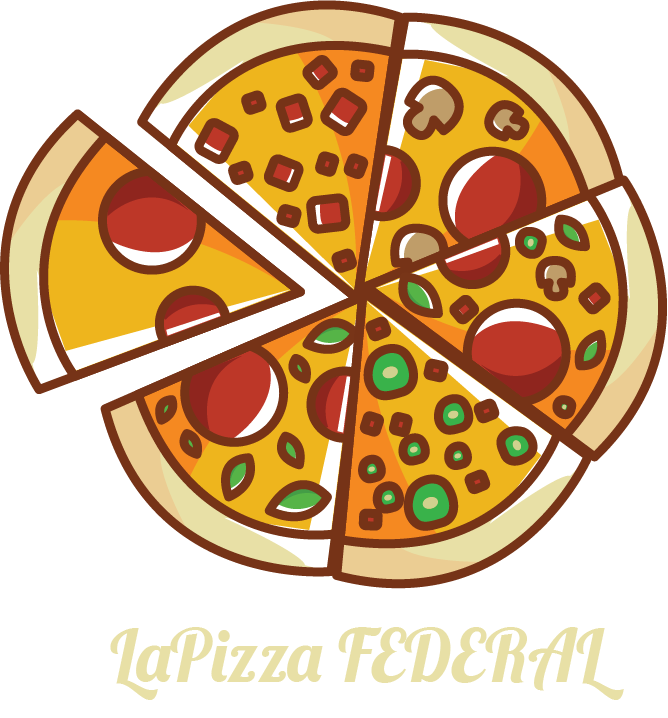

- favorite instagram.com/rafikmoreira
- insert_comment contato@rafikmoreira.dev.br
- place Minas Gerais
- work https://www.linkedin.com/in/rafikmoreira
Lá Pizza Federal


Ingredientes
2, 5 kg de tomate
10 g de sal marinho
50 g de azeite
5 g de manjericão fresco
Modo de Preparo
Coloque o tomates no liquidificador e utilize a função pulsar, cuidado para não liquidificar demais para que o molho não fique muito líquido. Tempere com o sal, o azeite e o manjericão Reserve para fazer as pizzas